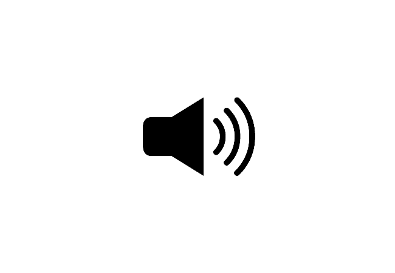
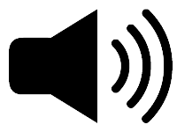

You may play this calibration sound as many times as you like until you've finished adjusting the volume on your computer. Press the "Done" button when you are done.
Replay
Done

Which sound was the SOFTEST (quietest)?
Next
Which of the following is accurate based on the instructions you've received? Or if you do not remember the instructions, select the last option.
Submit
Which of the following is accurate based on the instructions you've received? Or if you do not remember the instructions, select the last option.
Submit

6
Very appealing
5
4
3
2
1
Very not appealing
You're almost done! Please answer these last questions:
How often do you spontaneously notice how visually appealing (or unappealing) things are in your day-to-day life? Please choose the value from 1 to 7 that represents your experience -- where 1 means "very seldom" and 7 means "very often".
How often do you spontaneously notice how aurally appealing (or unappealing) environmental sounds are in your day-to-day life? Please choose the value from 1 to 7 that represents your experience -- where 1 means "very seldom" and 7 means "very often".
Did you complete this survey seriously throughout (without randomly clicking through any part of the survey)? (Your credit will be granted regardless what your answer is here. Please be honest for science! Thanks!)
Was any part of the procedure unclear? Did you have any problems completing any of the tasks? (Your credit will be granted regardless what your answer is here. Please be honest for science! Thanks!)
Submit
That is all for the demo experiment. Thank you for taking a look!
You may find the relevant publication here:
The materials used in this project can be find here: [OSF public link]